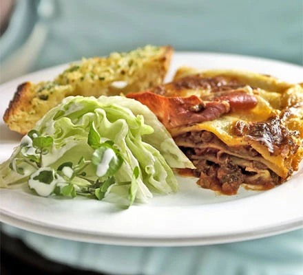

lasagne recipe

ingredients
- 2 tbsp olive oil
- 750g lean beef mince
- 90g pack proscuitto
- tomato sauce
- 200ml hot beef stock
- grated nutmeg
- 300g lasagne sheets
- white sauce
- 125G mozarella ball, torn into thin strips
steps
- to make the meat sauce, heat 2 tbsp olive oil in a frying pan and cook 750g lean beef mince in two batches for about 10 mins until browned all over
- finely chop 4 slices of prosciutto from a 90g pack, then stir through the meat mixture
- pour over 800g passata or half our basic tomato sauce recipe and 200ml hot beef stock. Add a little grated nutmeg, then season
- bring up to the boil, then simmer for 30 mins until the sauce looks rich
- heat the oven to 180C/160C fan/gas 4 and lightly oil an ovenproof dish (about 30 x 20cm)
- spoon one third of the meat sauce into the dish, then cover with some fresh lasagne sheets from a 300g pack. Drizzle over roughly 130g ready-made or homemade white sauce
- repeat until you have three layers of pasta. Cover with the remaining 390g white sauce, making sure you can’t see any pasta poking through
- scatter 125g torn mozzarella over the top
- arrange the rest of the prosciutto on top. Bake for 45 mins until the top is bubbling and lightly browned